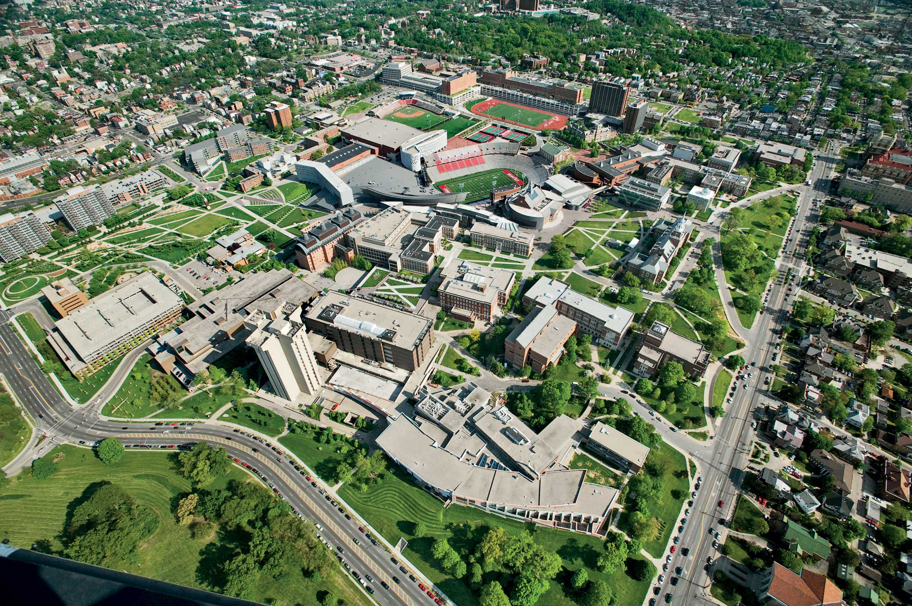

Welcome to the University of Cincinnati!
UC's west campus includes 62 buildings on 137 acres (0.55 km2). The university moved to this location in 1893. Most of the undergraduate colleges at the university are located on main campus. The exceptions are part of the University of Cincinnati Academic Health Center on the Medical campus. In spring of 2010 the University of Cincinnati was honored by being one of only 13 colleges and universities named by Forbes as one of "The World's Most Beautiful College Campuses".
More Info